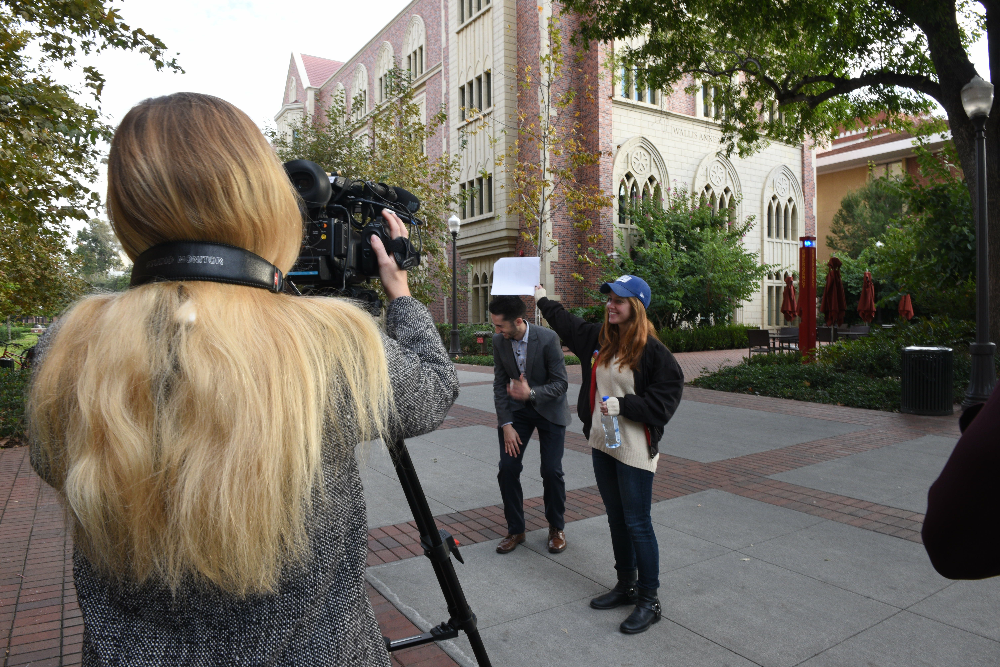
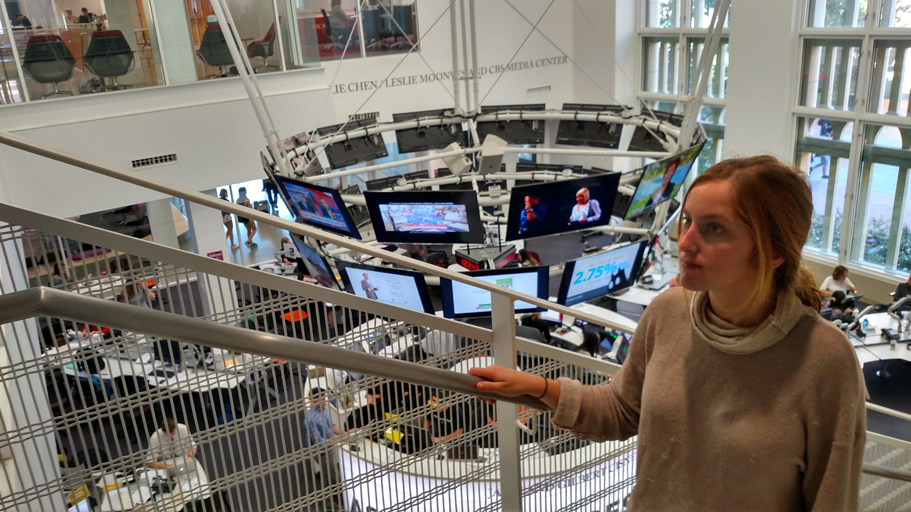

I applied to Annenberg because it felt like a school that matched my values, and every week I'm reminded of what a good choice it was.
From interesting speakers to great career services to incredible facilities, I think it is easily the best school at USC.
Of course, being a Communication major comes with some taunts to your intelligence, but those generally fade once people enter the media center.
While I don't work in the pit, I have my own space on the second floor.
Since freshman year, I've worked for a Documentary series, and I'm always proud of the stories it has produced.
It is an incredible program I'm glad to have led and been a part of, and it also grants me 24/7 access to the building.
Since the doors lock at 10, I often bring friends in to the quiet, secluded space that is my second home.
It's gotten to the point that recently, I went upstairs to my space expecting to be alone, and 4 of my friends were already sitting there. - MP

